{{ s.title }}
{{ s.desc }}
{{ t.work.solves }} {{ s.problem }}
{{ t.hero.kicker }}
{{ t.hero.lead }}
{{ t.work.kicker }}
{{ s.desc }}
{{ t.work.solves }} {{ s.problem }}
{{ t.tours.kicker }}
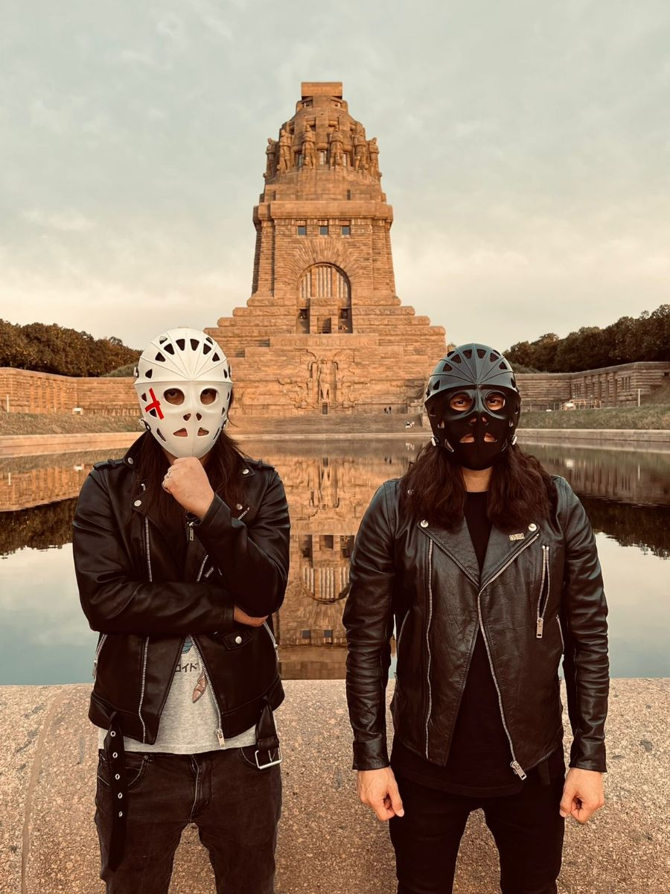
{{ c0.place }}
{{ c0.text }}
{{ c0.note }}
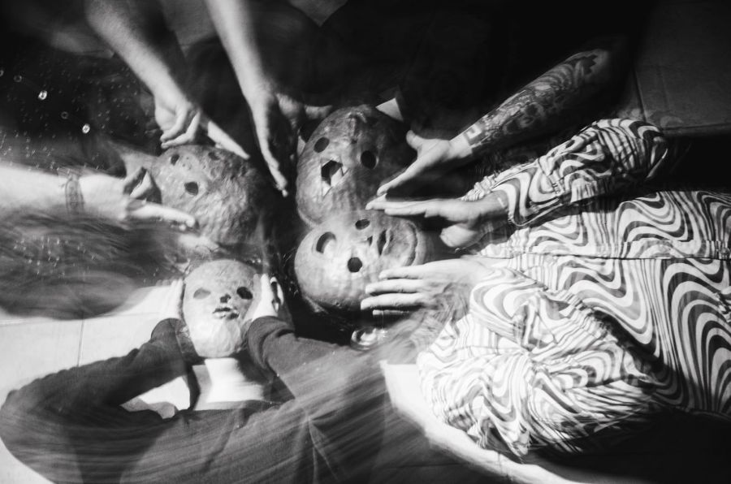
{{ c1.place }}
{{ c1.text }}
{{ c1.note }}
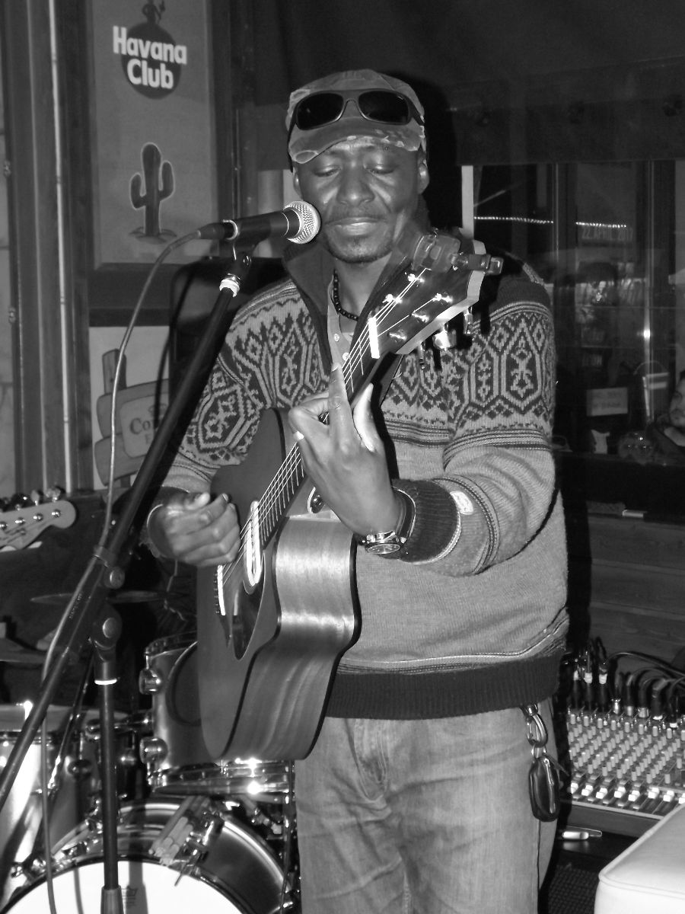
{{ c2.place }}
{{ c2.text }}
{{ c2.note }}
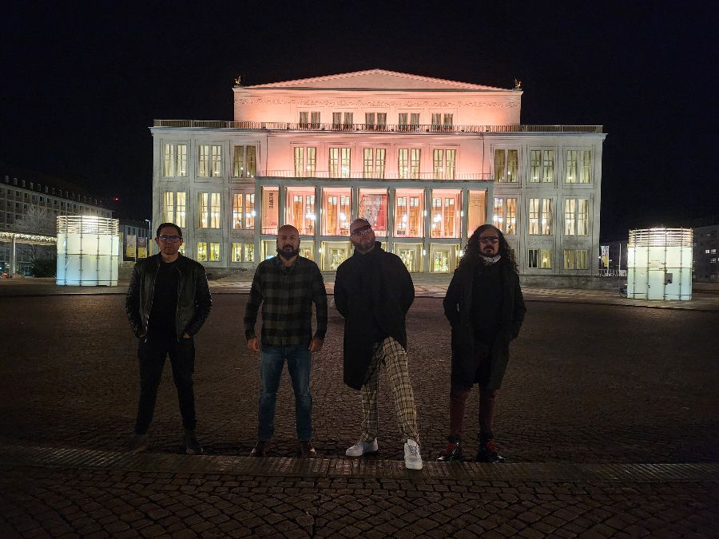
{{ c3.place }}
{{ c3.text }}
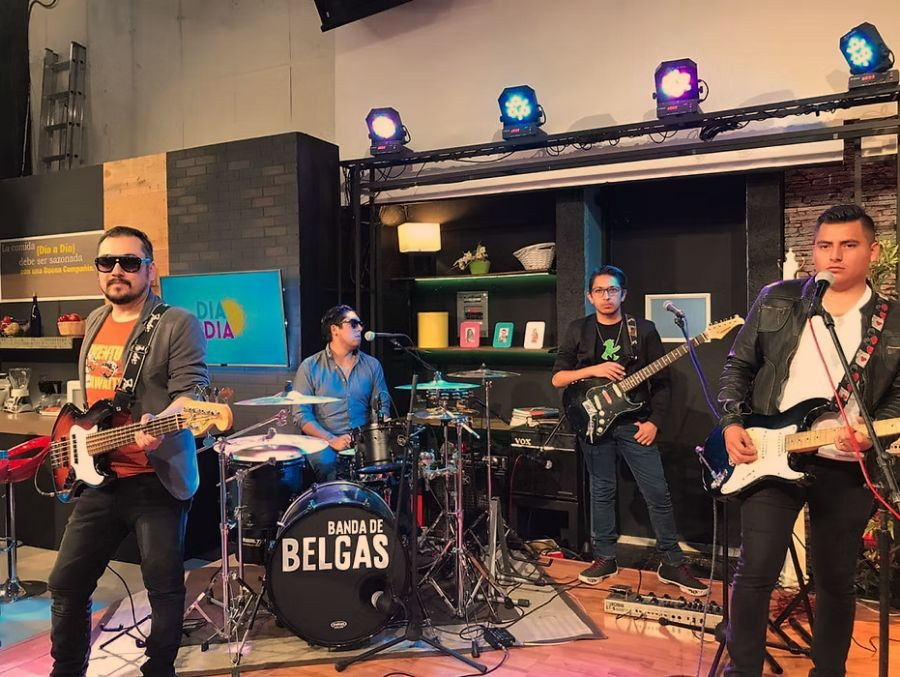
{{ c4.place }}
{{ c4.text }}
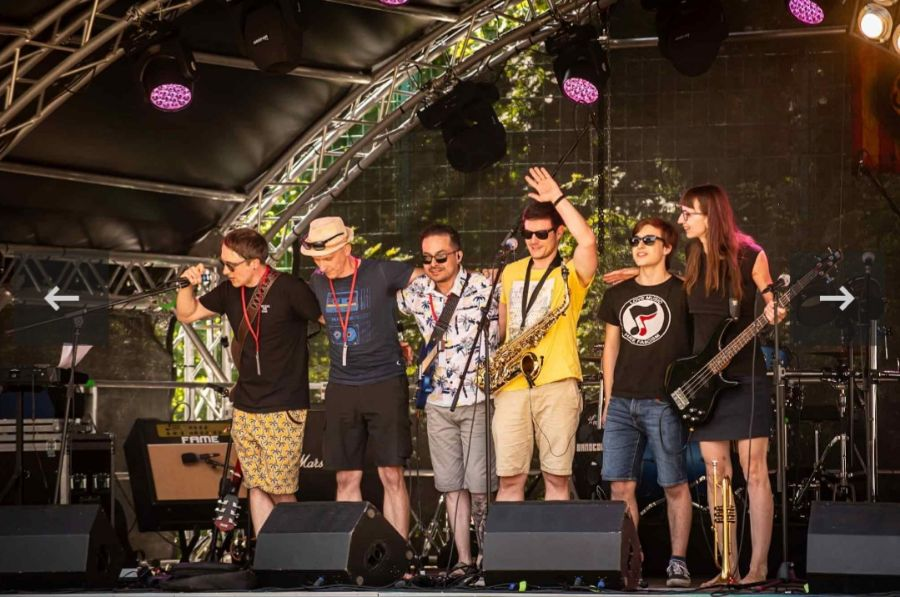
{{ c5.place }}
{{ c5.text }}
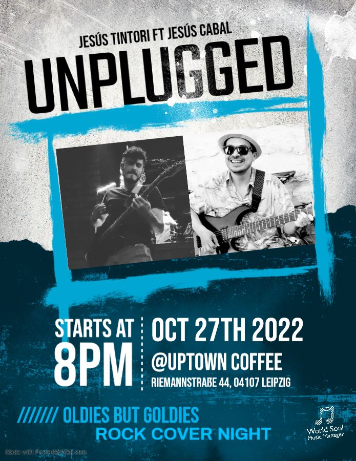
{{ c6.place }}
{{ c6.text }}
{{ c7.place }}
{{ c7.text }}
{{ c8.place }}
{{ c8.text }}
{{ c9.place }}
{{ c9.text }}
{{ t.timeline.lead }}
{{ t.timeline.footnote }}
{{ t.story.kicker }}
{{ t.story.p1 }}
{{ t.story.p2 }}
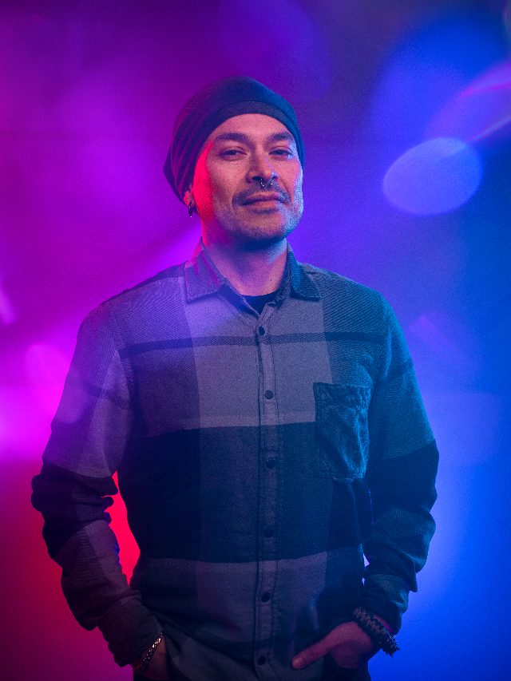
{{ t.founder.kicker }}
{{ t.founder.role }}
{{ t.founder.p1 }}
{{ t.founder.p2 }}
{{ t.founder.p3 }}
{{ t.founder.cta }}{{ t.team.lead }}
Jesús Cabal Aragón
{{ m0.role }}
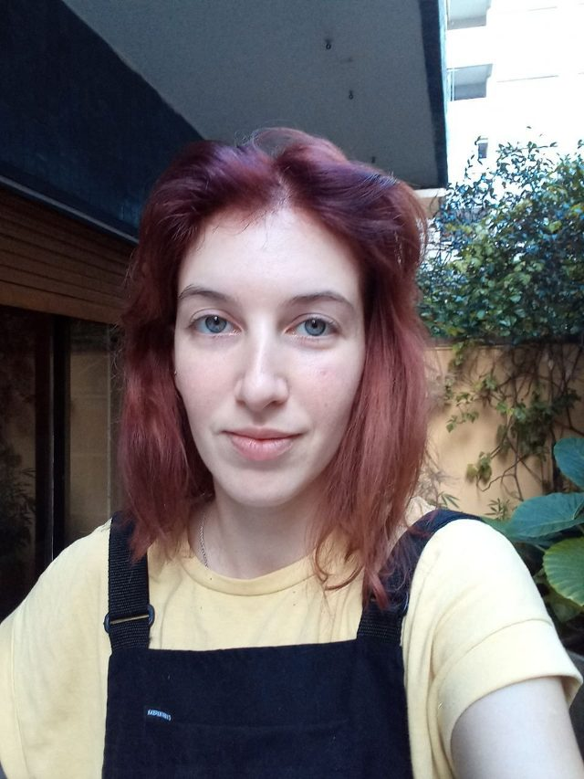
Melisa Altschüler
{{ m1.role }}
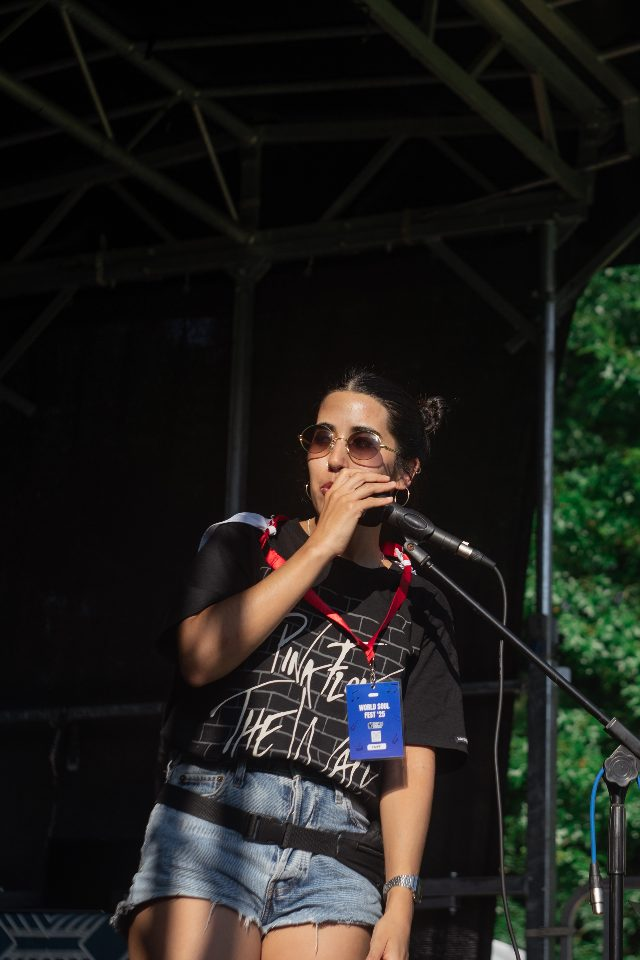
Maira Espinosa
{{ m2.role }}
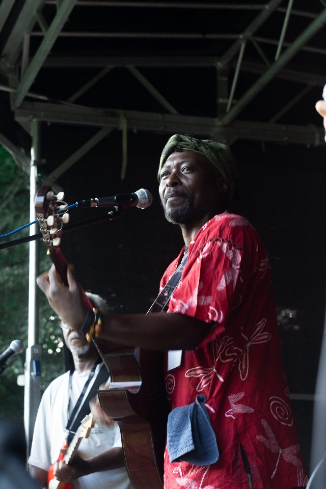
Dolus Mutombo
{{ m3.role }}
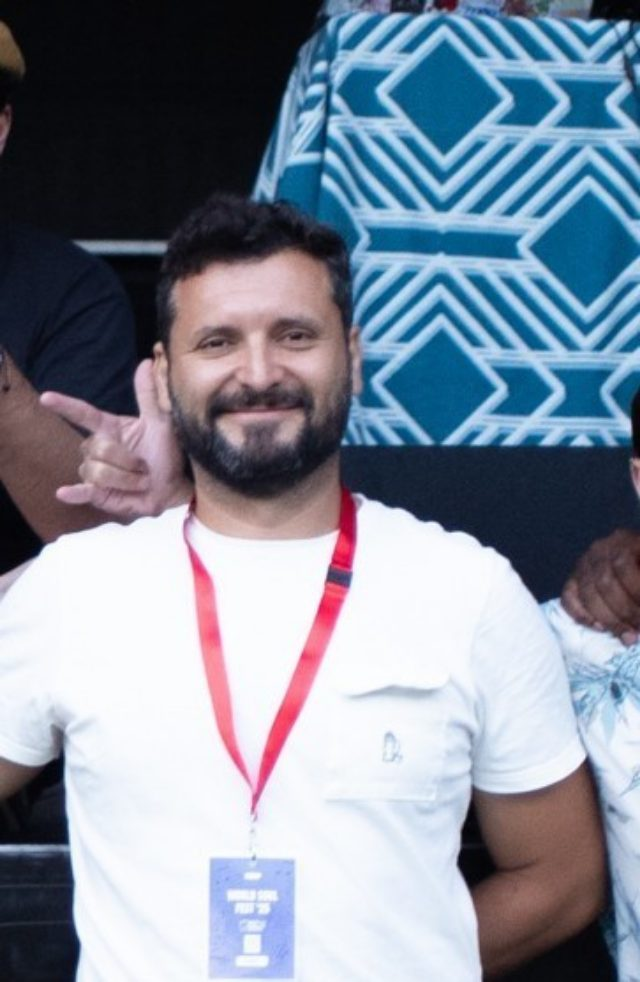
Leo Arias
{{ m4.role }}
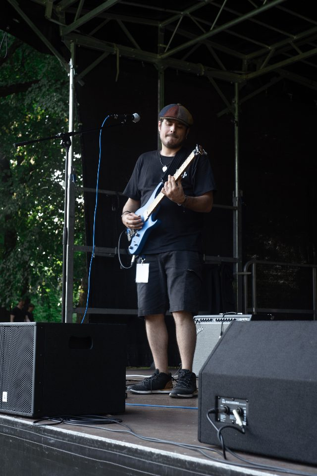
Jesús Tintori
{{ m5.role }}
{{ t.contact.kicker }}
{{ t.contact.social }}
{{ socialNote }}
Rechtliches
Jesús Guillermo Cabal Aragón
World Soul – Music Manager
Hohe Straße 26B
04107 Leipzig
Deutschland
Telefon: +49 (0) 1525 698 1202
E-Mail: worldsoul.ws@gmail.com
231/332/08038
Jesús Guillermo Cabal Aragón, Anschrift wie oben.
Wir sind nicht bereit oder verpflichtet, an Streitbeilegungsverfahren vor einer Verbraucherschlichtungsstelle teilzunehmen.
Alle auf dieser Seite veröffentlichten Fotografien wurden vom Team von World Soul während der von World Soul organisierten Tourneen aufgenommen und mit Genehmigung veröffentlicht.
Datenschutz
Jesús Guillermo Cabal Aragón, Hohe Straße 26B, 04107 Leipzig, Deutschland. E-Mail: worldsoul.ws@gmail.com, Telefon: +49 (0) 1525 698 1202.
Diese Website wird bei GitHub Pages gehostet (GitHub, Inc., 88 Colin P. Kelly Jr. Street, San Francisco, CA 94107, USA). Beim Aufruf der Seite verarbeitet der Anbieter automatisch technische Zugriffsdaten, insbesondere IP-Adresse, Datum und Uhrzeit, abgerufene Datei, Browsertyp und Betriebssystem. Rechtsgrundlage ist Art. 6 Abs. 1 lit. f DSGVO (berechtigtes Interesse an einer sicheren und stabilen Bereitstellung). Dabei können Daten in die USA übermittelt werden.
Bei Kontakt per E-Mail oder Telefon werden die übermittelten Angaben zur Bearbeitung der Anfrage gespeichert. Rechtsgrundlage ist Art. 6 Abs. 1 lit. b bzw. lit. f DSGVO. Die Daten werden gelöscht, sobald sie nicht mehr erforderlich sind.
Das Kontaktformular wird über den Dienst Formspree (Formspree, Inc., USA) verarbeitet. Übermittelt werden Name, E-Mail-Adresse und Nachricht. Rechtsgrundlage ist Art. 6 Abs. 1 lit. a und lit. b DSGVO. Die Daten werden an Server von Formspree in den USA übermittelt und dort so lange gespeichert, wie es für die Bearbeitung der Anfrage erforderlich ist. Weitere Informationen: formspree.io/legal/privacy-policy.
Diese Website setzt keine Cookies und verwendet weder Analyse- noch Tracking-Dienste. Im Local Storage des Browsers werden ausschließlich die gewählte Sprache und der gewählte Farbmodus gespeichert. Diese Angaben verlassen das Gerät nicht und können jederzeit über die Browsereinstellungen gelöscht werden.
Die Seite verlinkt auf Instagram, Facebook, X, YouTube und Spotify. Es werden keine Inhalte dieser Dienste eingebettet; eine Datenübertragung erfolgt erst, wenn ein Link aktiv angeklickt wird. Es gelten dann die Datenschutzbestimmungen des jeweiligen Anbieters.
Sie haben das Recht auf Auskunft, Berichtigung, Löschung, Einschränkung der Verarbeitung, Datenübertragbarkeit und Widerspruch sowie das Recht, eine erteilte Einwilligung zu widerrufen. Zuständige Aufsichtsbehörde ist die Sächsische Datenschutz- und Transparenzbeauftragte, Devrientstraße 5, 01067 Dresden.
Diese Seite nutzt eine SSL/TLS-Verschlüsselung. Eine verschlüsselte Verbindung erkennen Sie an „https://" in der Adresszeile des Browsers.
Stand: August 2026.